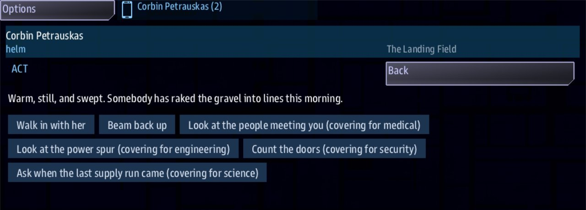

Class 3, Lecture 1 - What a boarding party is¶
What you will have at the end¶
Ten minutes spent ashore in a colony that says it is fine, and a picture of what a boarding scene is made of.
You will have played a scene borrowed from a shipped campaign, read the hundred lines that made it, and read the rest of its file: the notes its author kept. You will also have the mission the rest of this class is built in.

The Helm console turned into its officer's handheld, on the Act app at The Landing Field: the room's line, then Walk in with her, Beam back up and four choices covering for crew who stayed aboard.You paste two blocks today, and you delete them again at the end. You write nothing of your own until Lecture 2.
The video¶
About 6 minutes. Subtitles are available in the player.
Before you start¶
- You have finished Class 1. You can make a mission with
sbs create, open it in VS Code, runsbs lint, and start the game withsbs run. You have pasted a recipe card at the end ofstory.mast(Class 1, Lecture 11). - A command prompt open in
C:\Cosmos\data\missions. - The game closed.
Words for this lecture:
| Word | Meaning |
|---|---|
| Boarding party | The crew members who leave the ship together. Each one keeps their own console |
| Scene | A place written as text: rooms to read, and choices to press |
| Room | One stop in a scene: a few lines of what the party finds, and the ways out |
| Choice | One way out of a room. On screen it is a button |
| Handheld | What a console turns into while its crew member is ashore |
Stop 1 - A mission for this class¶
This class does not build on MyMission. Your Class 1 story ends the game ten minutes
after it starts, and a boarding scene should be allowed to take longer than that. It also
would not matter which of Classes 2, 4 and 5 you have added to it. So the boarding party
gets a mission of its own.
Make it the way you made MyMission. Type this as one line:
Press Enter at the question. It ends:
Then bring its libraries up to date, once:
Open the MyBoarding folder in VS Code and trust it, as in Class 1, Lecture 3. Then check
what you were given:
It is the mission you started Class 1 with: a station named DS 1, a drifting hulk 9000
out, and a two-step story named First Contact. mission.amd is 60 lines long and
story.mast is 105.
Stop 2 - Borrow a scene¶
Open Universe is a campaign that ships for this game. One of the places in it is a colony called Ferrow Landing: eleven people, a raked gravel landing field, and an administrator who has an answer ready for everything.
You do not need Open Universe on your computer. The block below is Ferrow Landing's own file, cut down to its scene. Stop 5 shows you what was cut.
Open mission.amd. Go to the very end of the file, below the last line of Derelict
Materials. Leave two blank lines, and paste:
## [Scenes](boarding)
### [The Landing Field](arrival)
% Warm, still, and swept. Somebody has raked the gravel into lines this morning.
% Eleven of us now. We manage. The children are at their lessons, so it is quieter than usual.
- [Look at the people meeting you](arrival_med) if medical >= 1 ; learn thin
- [Look at the power spur](arrival_eng) if engineering >= 1 ; learn cold
- [Count the doors](arrival_sec) if security >= 1 ; learn watched
- [Ask when the last supply run came](arrival_sci) if science >= 1 ; learn idle
- [Walk in with her](hall)
- [Beam back up]()
### [The People Meeting You](arrival_med)
% Four adults, all well fed, all with the same faint tremor in the hands.
% Not illness. Not cold. You have seen it in people who have not slept properly in a long time and have stopped mentioning it.
- [Say it out loud](arrival)
### [The Power Spur](arrival_eng)
% Rated for eleven, drawing for forty. Every one of those amps is going somewhere and it is not going into these buildings.
% The cable heading east is the newest thing on this colony.
- [Say it out loud](arrival)
### [Counting The Doors](arrival_sec)
% Nine doors on the square, and every one of them opens inward and locks from the outside.
% That is not how you build against weather.
- [Say it out loud](arrival)
### [The Last Supply Run](arrival_sci)
% Fourteen months, she says, and the manifest agrees with her.
% What it also says is that they ordered nothing on it. Not one item. A colony that needs nothing is a colony that has stopped planning.
- [Say it out loud](arrival)
### [The Long Hall](hall)
% Tables for forty and eleven place settings, laid at the near end where the light is.
% We keep it as it was. It seemed better than taking the rest away.
- [Look at the place settings](hall_med) if medical >= 1 ; learn tended
- [Look at what is heating this room](hall_eng) if engineering >= 1 ; learn idle
- [Look at the far end](hall_sec) if security >= 1 ; learn tended
- [Read the colony register](hall_sci) if science >= 1 ; learn thin
- [Ask to see the east cable](east)
- [Beam back up]()
### [The Place Settings](hall_med)
% Eleven laid, and every one of them worn at the same corner by the same right-handed grip.
% One person set all of these, every day, for a long time.
- [Say it out loud](hall)
### [What Is Heating This Room](hall_eng)
% Nothing is. The heat in here is coming through the east wall, from something on the other side of it that is running hot.
% You could warm this hall on the waste alone, and nobody has thought to.
- [Say it out loud](hall)
### [The Far End](hall_sec)
% Dust on the tables, and no dust on the floor between them. That floor is walked every day and never sat at.
% Something goes down this hall regularly. It does not stop to eat.
- [Say it out loud](hall)
### [The Colony Register](hall_sci)
% Forty one names. Eleven without a line through them, and the lines are all in the same hand and the same ink.
% They were not crossed out as it happened. Somebody sat down one afternoon and did all thirty at once.
- [Say it out loud](hall)
### [The East Cable](east)
% It runs a kilometre to a shed with no windows, and the shed is the warmest thing on this world.
% That is the relay. It is not interesting. I would rather show you the orchard.
%{learned < 3} She says it pleasantly and does not move. You have nothing to put to her yet - whatever is wrong with Ferrow Landing, you have not found enough of it to say out loud.
- [Ask her plainly what is in the shed](east_ask)
- [Open it](open) if learned >= 3
- [Let her show you the orchard](orchard)
- [Walk back to the hall](hall)
- [Beam back up]()
### [Asking Plainly](east_ask)
% It is the relay.
% She says it the same way both times, with the same pauses. You have heard a person say a true thing twice. This is not what that sounds like.
- [Back to the shed](east)
### [The Orchard](orchard)
% Thirty saplings in rows, none of them older than a year, each with a stone at its foot.
% We plant one for each of them. It is what we could think of.
- [Go back to the shed](east)
- [Walk back to the hall](hall)
### [The Shed](open)
% Thirty of them, warm, breathing, and asleep. The machine keeping them that way is drawing every spare amp on the colony and Bel is not stopping you looking at it.
% We could not wake them. We could not bury them either. So we kept them, and we set their places, and we said we were fine.
- [She was not lying, exactly]()
The whole block is also in this lecture's example\mission.amd, from line 63 to the end,
if you would rather copy it from a file.
Save, and run lint. It has one thing to say:
== mission.amd ==
[WARNING] line 63:5: nothing in this mission reads a section keyed `boarding`, so its records are never loaded. The story asks this file for: characters, crew, dialogue, items, landmarks, quests, relics, scans, sides. Change the key in round brackets to one of those, or add the line that reads it (section-not-loaded)
1 amd + 1 mast file(s): 0 error(s), 1 warning(s)
Lint is right. A scene needs something to start it. Open story.mast, go to the very end
of the file, leave two blank lines, and paste this card:
#
# LECTURE 1 ONLY. When the ship finds the derelict, open a boarding visit.
#
//shared/signal/quest_signal if SIGNAL_NAME == "derelict_found"
party_ship = next(iter(role("__player__")), None)
->END if party_ship is None
boarding_visit(party_ship, dialogue_scenes(amd_section(MISSION_DOC, "boarding")), "arrival", title="Ferrow Landing")
->END
The line that starts // begins at the left edge. The four lines under it are pushed in
by four spaces. The long line is one line. The card is also at the end of this lecture's
example\story.mast.
Do not read the card. Lecture 2 gives you one like it to keep, and says which three words on it are yours to change. This one opens the scene when the ship finds the hulk. A colony does not belong aboard a hulk, and for ten minutes that will not matter.
Save, and run lint again. Now it says clean.
Stop 3 - Play it¶
Start the game with a server and a Helm console:
- At Helm, find the hulk. At the start it is off the map: press the zoom-out magnifier above the map once, and the hulk is the mark with no name ahead of the ship. Its name appears when the ship is within about 4K. Fly toward it. When the ship is inside 2000 of it, the first step of First Contact completes. Bring the ship to a stop.
- Press the handheld icon at the top of the console. One of its tiles is Boarding Party, and it offers Ferrow Landing. Press it, then press BEAM DOWN.
- The console is now the boarding party's handheld. The bar across the top says who you are, your job, and where you are standing. Under it is a line about the place, and under that the buttons.
- Read the buttons. The first two are plain: Walk in with her and Beam back up.
The four after them end in words like
(covering for medical). Those belong to jobs nobody in your party holds. You are one helm officer, so the game hands them all to you. - Take a covering choice. Your pick is written into the page, without its covering words, then what that person would have noticed, and one button brings you back. The page keeps the whole visit, with the newest at the foot.
- Walk in with her, to the long hall. Ask to see the east cable. If the party has found out fewer than three things, Open it is not there. Walk back and take more of the covering choices, in either room.
- With three things found out, go to the east cable again. Open it is there now. Take it, read the last room, and press its one button. The visit ends, and the console is Helm again.
A dozen presses took me from the landing field to the end of the last room. There is no hurry. Nothing in this scene has a clock.
What the game made from the block, counted in a test run:
| It made | How many |
|---|---|
| Rooms | 14 |
| Lines of description to pick from | 29, two to a room and three at the east cable |
| Choices | 29 |
| Things the party can find out | 5: thin, cold, watched, idle and tended |
| Things it must find out to open the shed | 3 |
If you can, play it once more with two or three consoles: add engineering and
science after helm on the sbs run line. Then the engineer is offered the power spur
as their own, the science officer is offered the supply run, and only what is left over is
marked as covering. The party moves together: every console shows the same page, and a
button that leads to another room takes everyone there.
Stop 4 - Read what you pasted¶
Go back to mission.amd and read the block. It is one section, and fourteen records.
You saw the first of them on the handheld: the bar named the room The Landing Field, one
line was under it, and its six buttons are its six choices.
A record here is simpler than a quest. It has a heading, and no fence at all. Take the first one:
### [The Landing Field](arrival)
% Warm, still, and swept. Somebody has raked the gravel into lines this morning.
% Eleven of us now. We manage. The children are at their lessons, so it is quieter than usual.
- [Look at the people meeting you](arrival_med) if medical >= 1 ; learn thin
- [Look at the power spur](arrival_eng) if engineering >= 1 ; learn cold
- [Count the doors](arrival_sec) if security >= 1 ; learn watched
- [Ask when the last supply run came](arrival_sci) if science >= 1 ; learn idle
- [Walk in with her](hall)
- [Beam back up]()
| Part | It is |
|---|---|
### [The Landing Field](arrival) |
A room. arrival is its key |
A line that starts with % |
What the party finds. With two such lines the game shows one of them, picked at random each time |
- [Walk in with her](hall) |
A choice. The words go on a button, and hall is the key of the room it leads to |
if medical >= 1 |
Who is offered the choice: someone whose job is medical |
; learn thin |
What happens when it is taken: the party has found out a thing named thin |
- [Beam back up]() |
A choice that leads nowhere. Taking it ends the visit |
Five things to notice. You will write every one of them yourself in the next four lectures.
The rooms are joined by keys. Follow them: arrival leads to hall, hall leads to
east, and east leads to open, which is the shed. Every other record hangs off one of
those four.
Each job has something only it can do. The four choices with an if in the first room
are for a medic, an engineer, somebody from security and a science officer. When that
person is not in the party, one console covers for them. That is why you saw them all.
The party collects what it finds out. Eight choices say learn, and between them they
teach five different things. A thing counts once, however many times it is read.
One door counts them. At the east cable, - [Open it](open) if learned >= 3 is
offered only when the party has found out three things. The line above the choices that
starts %{learned < 3} is only shown before that, and it tells the party why the door is
shut.
Every room has a way out. The short rooms have one choice, and it leads back to where the party was.
You played half the words. Each room has two % lines, and the game showed you one. Play
it again and you will read some of the others.
Stop 5 - Read the rest of the file¶
The shipped file is 211 lines long. You pasted 101. Here is the rest, exactly as it ships. Do not type any of it.
The author's notes. The file opens with a page of notes to whoever edits it next. Two of them:
**Every room is REVERSIBLE, not just exitable.** The east cable used to offer only two
flavour loops and a gated shed, so a party that walked there under-informed could go back
to nothing - the only way out was off the planet. A room whose options all loop is a dead
end however many of them there are. Every room now leads BACK as well as on, and a gated
`%{learned < 3}` line says plainly that they have not found enough yet, rather than leaving
the crew to guess whether the game is broken.
**The shape worth keeping.** Every room offers each job something only it can do: a
medic, an engineer, somebody from security, a science officer. A reading that matters
carries `; learn <name>`; the shed opens at `if learned >= 3`. Three of the four, so there
is no single correct route through Ferrow Landing, and `learn` is a set - walking back
into a room you have already read counts once. What is wrong with Ferrow Landing is
legible only when the party puts its readings together and finds they do not agree -
which is why it plays best with several people at several consoles rather than one person
with a menu.
Those are rules somebody learned by getting them wrong. Lecture 2 and Lecture 3 teach them, and Lecture 6 gives you a way to check them with a pencil.
A voice (Class 2 taught these). The administrator is a record in a section called Voices:
### [Administrator Bel](bel)
---
Face: terran_female
Roles: narrator
Color: "#fd8"
---
Ferrow Landing's administrator. Delighted to see you. Has an answer ready for everything.
In the shipped file every room has a three-line fence that gives its lines to her:
The call that starts it. In Open Universe nobody flies to a hulk. The ship docks at the colony, and a call arrives:
### [Ferrow Landing Answers](shore_call)
---
Speaker: bel
Title: Ferrow Landing
Color: "#fd8"
---
% Ferrow Landing here, and you are very welcome. We are all fine. Nothing needed, nothing to report.
% We had a quiet year, that is all. You are welcome to come down and see the place if you have the time.
- [Assemble a boarding party]() ; signal boarding_down
- [Thank her and stay aboard]()
Look at the first answer. It leads nowhere, and after its ; it sends a signal. That
signal is what opens the scene. Your card did the same job a plainer way.
What was cut, and why¶
| In the shipped file | Why your copy does not have it | Where it comes back |
|---|---|---|
| The page of notes at the top | They are notes, not records | Lectures 2, 3 and 6 |
| The Voices section | Your mission has no cast yet. Nothing in it reads a section with that key | Class 2 |
Speaker: bel in a fence on all fourteen rooms |
It names a voice your mission does not have. Left in, lint warns fourteen times and the scene plays the same | Class 2 |
| The Hails section | The call belongs to a place on Open Universe's map | Class 5 |
Nothing was added to the rooms. Every line you pasted into mission.amd is a line of the
shipped file. The card is not from that file at all.
The other half of this class¶
Lectures 2 to 6 build a scene like this one: rooms, choices, jobs, skills, and a story for one person. Lecture 7 onward does the same thing on a map the crew can walk about on. The shipped example of that is a mission called Dawnline. You do not need it yet.
Stop 6 - Give it back¶
Ferrow Landing was a loan. Lecture 2 starts with the mission as sbs create made it.
- In
mission.amd, delete everything from the line## [Scenes](boarding)to the end of the file. The file should end with the last line of Derelict Materials again, and be 60 lines long. - In
story.mast, delete everything from the#line above# LECTURE 1 ONLYto the end of the file. The file should end with the line->ENDagain, and be 105 lines long. - Save both, and run
sbs lint MyBoarding. It should sayclean.
If you would rather keep Ferrow Landing to look at, make a second mission for it first
(sbs create Borrowed -t amd) and paste both blocks there.
If something goes wrong¶
Every row was tried on the two blocks above.
| What you see | Why | What to do |
|---|---|---|
Lint says section-not-loaded about boarding |
The card is not in story.mast, or it was pasted into mission.amd |
Paste the card at the end of story.mast |
Lint says duplicate-key about boarding |
The block was pasted twice. The scene still plays | Delete the second copy |
Lint says dangling-choice |
The end of the block was cut off. A choice leads to a room that is not there, and taking it ends the visit | Delete the block and paste it again, whole |
Lint says mast-unreachable under story.mast |
The card lost its line that starts // |
Delete the card and paste it again, whole |
Lint says dangling-speaker fourteen times |
You pasted from the shipped file, with its Speaker: fences. The scene plays the same |
Leave it, or use the block on this page |
The hulk is found and no Boarding Party tile appears. Lint says clean |
The first line of the block, ## [Scenes](boarding), was not pasted. mast.runtime.log in the mission folder says the visit was given no rooms |
Paste the heading above The Landing Field, with a blank line under it |
sbs create says already exists and is not empty |
You have a MyBoarding already |
Use it if it is untouched. If not, move it aside and make a new one |
Two slips at Stop 6 that lint does not report. Leaving the card behind in story.mast
looks harmless and is not: lint says clean, and when the ship finds the hulk the game
writes a line in mast.runtime.log about a room named arrival that is not there.
Lecture 2's card would then be the second one in the file. And deleting too far up in
mission.amd takes Derelict Materials with it: lint still says clean, and the hulk has
lost a reading. Count the lines. There are 60 and 105.
Exercise¶
Do this before Stop 6, while Ferrow Landing is still in your files. Change one thing at a time, save, start the game, look, and close it.
- On the card, change
"Ferrow Landing"to a name of your own. Find it on the Boarding Party tile. - In the record The East Cable, change
if learned >= 3toif learned >= 5. Play it. The shed still opens, but only after every one of the five things has been found. Put the 3 back. - Play it once more and take Beam back up in the first room. The visit ends at one press, and the Boarding Party tile has nothing to offer afterwards.
Then answer on paper, from the file alone and without the game:
- Which rooms can the party reach from the landing field without finding anything out?
- Which two choices teach
tended? Whose jobs are they? - A party of one engineer and nobody else: which choices in the long hall are marked as covering?
Checkpoint¶
You are done when all four are true:
- You have a mission folder named
MyBoarding, andsbs lint MyBoardingsaysclean. - You have beamed down to Ferrow Landing and opened the shed.
- You can say what
%,if,; learn,learnedand()each do in a room. mission.amdis 60 lines long again andstory.mastis 105, with no scene and no card.
Next¶
Lecture 2 writes a place of your own from an empty page: a crew, three rooms aboard the hulk, and the card that starts the visit.
Further reading¶
Nothing here is needed for Lecture 2.
- "Boarding parties" in the library documentation. Read the first screen and stop.
- Open Universe, if you have it:
quiet_shore.amdis the file this page reads from. Read it. Do not start Open Universe to try it: that mission keeps saved games, and Class 5 shows you how to work on it safely.
Download this lecture's finished files (a zip of its example folder).